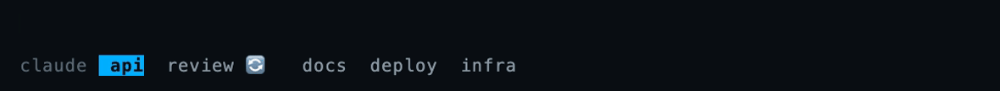

Run several Claude Code sessions across tmux windows and they all look identical from the tab bar. This puts one badge on each tab, so a glance tells you what's working, what's waiting on you, and what's ready to read.

Four states
The distinction that matters most is the third one. A turn ending isn't the same as the work being finished — Claude often ends a turn with a build or a test suite still running in the background, and a tab that says ready when it isn't will teach you to ignore the badges entirely.
🔄, ❓, 📝 and ⏳ describe live state. Looking at a window doesn't answer a question, approve a plan, or finish a build, so visiting a tab leaves them alone.
✅ clears when you arrive at the window, and also when you leave a window it appeared in — because that's the point at which you've actually had your chance to read it. Sitting in a window when a turn ends is not the same as having read the answer.
Install
The state half sets @claude_status on the window that owns the
session. The render half turns that into a badge. They don't know about each
other, which is why either can be swapped.
With TPM, in ~/.tmux.conf:
set -g @plugin 'dop-amine/tmux-claude-status'
Or without a plugin manager:
run-shell ~/path/to/claude-status.tmux
As a Claude Code plugin — no JSON editing, no absolute paths:
/plugin marketplace add \ dop-amine/tmux-claude-status /plugin install \ tmux-claude-status@tmux-claude-status
Then restart your Claude sessions.
claude --resume restarts the process while keeping the
thread. (Hand-wired settings.json hooks are different: those
hot-reload into running sessions on 2.1.220. /hooks proves
neither — it's a read-only viewer of the settings file.)
State is kept per pane and aggregated to the window, so two Claude sessions
split across one window don't overwrite each other. The tab shows whichever
pane most needs you, ranked
question → plan → done → running → shells.
gpakosz rebuilds the status formats after sourcing your overrides, so it
needs one extra step — the plugin publishes a fragment you splice in
yourself. Both format variables need it, including the
_current_ one for the selected tab.
Setup guide →
| Option | Default | Purpose |
|---|---|---|
@claude_badge_running | ' 🔄 ' | The glyph for each state. Swap for single-width characters if emoji clip in your terminal. |
@claude_badge_question | ' ❓ ' | |
@claude_badge_plan | ' 📝 ' | |
@claude_badge_shells | ' ⏳ ' | |
@claude_badge_done | ' ✅ ' | |
@claude_badge_auto_append | on | Append the badge to both window status formats automatically. |
@claude_badge_clear_on_visit | 1 | 0 makes ✅ persist until your next prompt instead. |
@claude_badge_toggle_key | unset | Bind a prefix key to flip the ✅ lifecycle at runtime. |
Requires tmux 3.1+ and Claude Code 2.1.x. No dependencies — POSIX shell and tmux.
Internals
The behaviour underneath was found by reading strings out of the Claude Code binary and running controlled experiments. It's written down in the repo, with the method for each claim, so it can be re-checked when a release changes something.
Notification carries a notification_type; only three of its eight values mean "blocked on the user". idle_prompt is deliberately excluded — it fires when Claude is merely idle, which would put ❓ on every finished window.hooks.json honours matcher, which is what makes ❓ possible at all. Verified by installing the plugin as the only source of hooks and driving a real question dialog.settings.json hooks hot-reload into running sessions (verified with a marker hook fired mid-session); plugin hooks only load at session start — and asynchronously, so a brand-new session's very first prompt can miss them. A missing hook script still fails silently — the badge just freezes.pgrep doesn't work in a hook. pgrep -P returns nothing from inside a hook's execution context. Not an error — an empty result, which reads exactly like "no background shells" and produces a badge that's confidently wrong. ps works./plan
ends by calling ExitPlanMode, so PreToolUse with that
matcher fires the moment the approval dialog opens. There is no plan-specific
notification type; the tool name is the signal.claude process, so a process-tree walk is structurally blind to it.
A window with an agent working for minutes reported ✅. They're counted via
SubagentStart/SubagentStop instead.PostToolUse
doesn't fire when a tool fails and Stop doesn't fire when a turn dies
on an API error. Without PostToolUseFailure and
StopFailure, a failed tool strands ❓ and an API error strands 🔄.
Clearing the badge when you visit a tab looks like a one-liner with
after-select-window. It never fires. That's a command
hook, and clicking a tab in the status bar runs switch-client,
not select-window. The fix is the
session-window-changed event hook.
select-window directly,
which is the one path real usage never takes. Testing a UI behaviour by
invoking the command you assume it runs only confirms your assumption
back to you. The test suite now asserts on what a tab actually renders.